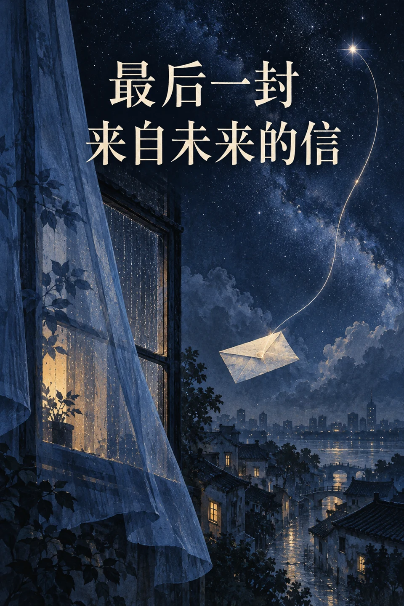
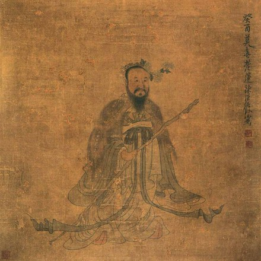
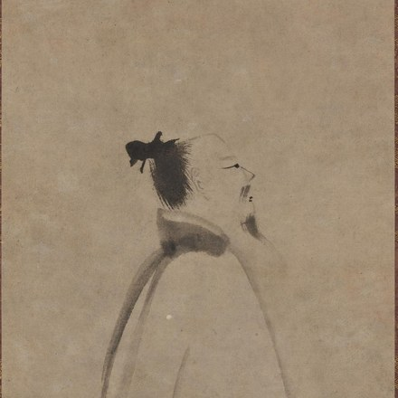

未寄出的夏天，
只有风知道
写给青春与暗恋的故事，仍在书写中。
查看详情志在千里
自信人生二百年，会当击水三千里
路漫漫其修远兮，吾将上下而求索
工欲善其事，必先利其器
让故事有文字，让想象有画面
写给青春与暗恋的故事，仍在书写中。
查看详情
关于数字生命、记忆与身份的长篇科幻故事。
查看详情从文字描述出发，在模型与参数之间调整，寻找想象中的画面。
查看详情将模型、文字与采样连接起来，让画面沿着清晰的节点逐步成形。
查看详情五岳寻仙不辞远，一生好入名山游
人物与所爱
高山仰止，景行行止
读他们的故事，也读留下来的作品。精神 · 诗词 · 文章 · 书法
从山河落笔，向历史深处读去。
展开 · 诗词与文章楚辞 · 求索 · 香草美人

把求索写进长诗，把理想留在字里。
展开 · 楚辞选读行旅 · 诗歌 · 自由

一生行吟，山河都成为诗的来处。
展开 · 行旅与诗歌棋盘之上，旋律之间。
一人一页 · 慢慢翻阅文字 / 棋局 / 旋律
海内存知己，天涯若比邻
读到这里，若有想分享的话，欢迎留下一封来信。